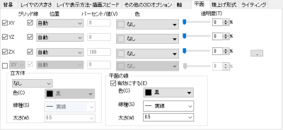
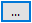

直交座標系3Dグラフでは、XY、YZZXおよび追加の平面（3Dグラフの前面を含む）の位置と表示を制御することができます。
3D平面の表示を設定する場合、作図の詳細ダイアログのレイヤレベルの平面タブを編集します。
このタブは、2Dウォータフォールグラフのレイヤレベルのでも利用可能ですが、設定項目はXY、YZ、ZX平面に制限されます。3Dカラーマップ三点曲面、3D三角錐、3D三点グラフシンボルの場合、XY、YZh、ZhX、ZiZhの4つの平面を設定できます。
|  | |
| 一般3Dグラフの平面タブ | 3D三点、3D三角錐の平面タブ |
このチェックボックスはグリッド線を平面に表示するかどうか指定します。
| Note:チェックを付けない場合、軸ダイアログでグリッド線のチェックボックスを表示にしていても、平面でのグリッド線は非表示になります。 |
このチェックボックスは、グラフが回転して平面の1つが前面に移動したときに自動的に背面を再表示するのに使用します。
平面の位置を指定する3つのオプションを利用できます。
| 自動 | 元の平面位置を維持します。 |
|---|---|
| 下からの% | 下からの%は、直行する軸の下からみた各平面位置を軸の長さの割合(%)で制御します。 |
| 位置= | 平面の位置を直接指定します。 |
下からの%が選択されている場合、ここにパーセント値を入力します。
位置=が選択されている場合は、位置の値を入力します。
色は、それぞれの平面の色を指定します。
平面の色の透過度を指定します。
一般的な3Dグラフの場合、デフォルトで表示されるXY/YZ/ZX 平面に加えて、複数の平面を表示できます。
平面を1つだけ追加する場合は、最後の平面の項目のチェックボックスにチェックを付けて、平面の表示と位置を設定します。
複数の平面を追加する場合は、最後の平面の右側にあるボタンをクリックして、追加の平面ダイアログを開きます。このダイアログを使って、異なる方向に複数の平面を追加できます。
追加の平面を追加、削除、または選択
デフォルトでは、左パネルに「Top XY Plane」が表示されます。追加ボタンをクリックすると平面を追加できます。平面を削除するには、左パネルで平面を選択して削除ボタンをクリックします。
複数の平面を一緒に編集すには、左パネルでマウスの左ボタンを押しながらドラッグして複数の平面を選択すると、右側のパネルでまとめて設定できます。
平面を表示または非表示
表示にチェックを付けてその平面を表示するか指定できます。表示にチェックを付けた場合、下の設定項目が表示され、利用できます。
平面の方向を設定
ドロップダウンリストから平面の方向として、XY、YZ、ZXを選択します。左パネルで選択した複数の平面の方向が違う場合、平面ドロップダウンリストは使用できないことに注意してください。
平面のグリッド線を表示
グリッド線にチェックを付けると平面にグリッド線を表示できます。追加の平面上のグリッド線のスタイルは関連する座標平面の設定に従います。
平面の位置を設定
位置のコンボボックスで平面の位置を設定できます。
平面の位置を指定する3つのオプションを利用できます。
位置を位置=または下からの%にした場合、位置情報に応じて平面の名前が変更されます。
左パネルで複数の平面を選択し、 位置を位置= または下からの%にした場合、となりのボックスにスペース区切りで位置の値を直接入力して、まとめて平面の位置を設定できます。
| Note: セルの値を使って追加の平面位置を定義したい場合は、まず名前付き範囲を定義し、この名前付き範囲を使って位置を指定します。 |
平面の色や透過率を変更
色 の項目で平面の色を設定します。透過率の項目で平面の透過率を設定できます。
| Note: |
Note: 3D三点座標のグラフの場合、このグループはプリズムという名称です。
正面角の色、線種、太さを指定します。
全体立方体/プリズムの色、線種、太さを指定します。
有効にするのチェックボックスをクリックして、平面の縁の色、線種、太さを指定します。